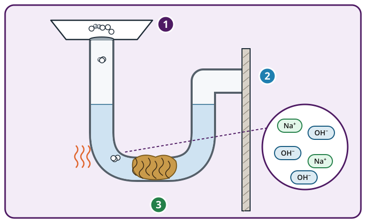
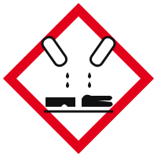
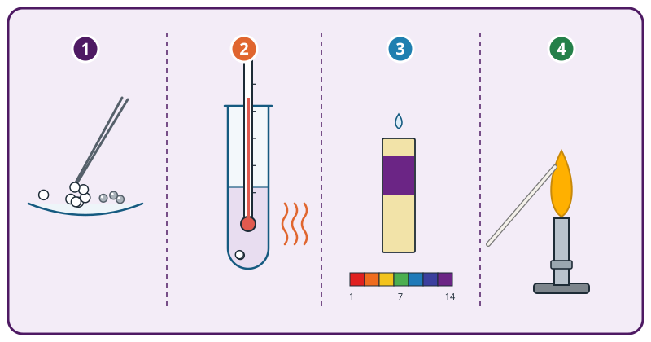
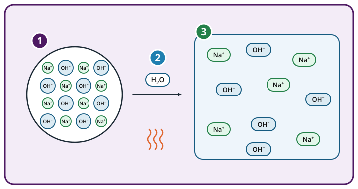
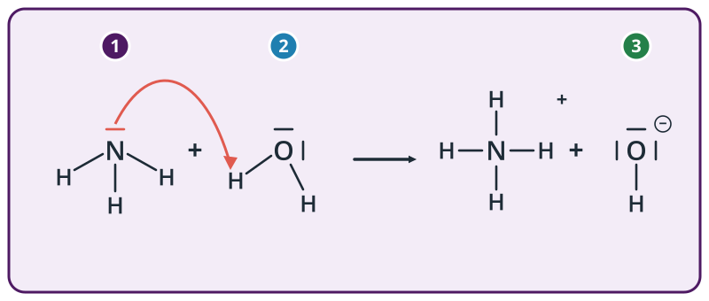

Rohrfrei –
aber grün?
LERNPFAD · 04–05 ÖKOLOGISCHE PRODUKTENTWICKLUNG · CHEMIE 9
Berlin-Neukölln, ein Montagmorgen. In einer alten Fabrikhalle arbeitet das junge Start-up Klarfluss. Es entwickelt Haushaltsreiniger, die wirken und trotzdem Umwelt und Gesundheit schonen. Das erste Projekt ist ein ökologischer Rohrreiniger.
Lina Klar: „Willkommen im Entwicklungsteam! Bevor wir etwas Besseres erfinden, müssen wir verstehen, wie die Konkurrenz funktioniert. In der ersten Sitzung untersucht ihr einen gewöhnlichen Rohrreiniger im Labor. In der zweiten Sitzung findet ihr heraus, wie man seinen Wirkstoff überhaupt herstellt, und trefft eine erste Produktentscheidung. Schutzbrille auf, wir fangen an!“
Lina Klar leitet bei Klarfluss die Produktentwicklung. Ihr seid ihr neues Team von Produktentwicklerinnen und Produktentwicklern.
So arbeitet ihr
- Ihr arbeitet im Team (2 bis 4 Personen) an einem iPad. Verteilt die Rollen: Medien und Protokoll (Fotos, Video, Laborjournal) und fachliche Qualität (Fachsprache, Gleichungen, Sicherheit).
- Jede Sitzung hat fünf Meilensteine. Jeden Meilenstein schließt ihr mit dem richtigen Code oder der richtigen Lösung ab.
- Wenn ihr nicht weiterkommt: Öffnet die Tipps 💡 von oben nach unten. Nehmt nur so viele, wie ihr braucht, und kreuzt sie im Journal an.
- Ihr seid schnell? Die Vertiefungen 🎓 sind freiwillig. Jede gelöste Vertiefung bringt einen Vertiefungspunkt.
- Euer Entwicklerjournal auf Papier füllt ihr nebenbei aus. Das blaue Zeichen 📝 sagt euch, wann.
- Das orange Zeichen 🧪 heißt: Jetzt geht ihr an den Experimentierplatz oder an die Teststation.
Wer entwickelt heute?
🔬 Sitzung 1: Die Konkurrenz im Labor
Wie funktioniert ein gewöhnlicher Rohrreiniger? Hier startet ihr!
🥨 Sitzung 2: Hydroxide herstellen
Nur mit dem Lösungswort aus Sitzung 1.
📝 Das Lösungswort steht in eurem Entwicklerjournal. Ihr könnt Sitzung 2 auch auf einem anderen iPad spielen.
Das Etikett der Konkurrenz
Lina Klar: „Hier ist das meistverkaufte Rohrreiniger-Granulat. Auf der Packung prangt ein rotes Warnzeichen. Wer im Labor arbeitet, muss wissen, womit er es zu tun hat. Lest deshalb zuerst das Etikett, bevor ihr irgendetwas anfasst.“

Abb. 1 · Rohrreiniger im verstopften Abfluss

GefahrInhaltsstoffe laut Etikett: Natriumhydroxid, Aluminium
| H314 | Verursacht schwere Verätzungen der Haut und schwere Augenschäden. |
| H290 | Kann gegenüber Metallen korrosiv sein. |
| P280 | Schutzhandschuhe und Schutzbrille tragen. |
| P305+P351+P338 | Bei Kontakt mit den Augen: einige Minuten behutsam mit Wasser spülen. |
| P310 | Sofort Giftinformationszentrum oder Arzt anrufen. |
🏷️ Auftrag
- Verteilt die Rollen und tragt eure Namen ins Entwicklerjournal ein.
- Beantwortet die vier Fragen zum Etikett. Jede Antwort hat einen Buchstaben. Die vier Buchstaben der richtigen Antworten ergeben der Reihe nach den Code.
🔒 Meilenstein 1
Tippt die vier Buchstaben eurer Antworten ein (Frage 1 bis 4).
💡 Tipps · Entwicklerjournal Aufgabe 1 (Tipp für Tipp öffnen, im Journal ankreuzen)
Tipp 1 · Denkanstoß · Was will Klarfluss wissen?
Eine Forschungsfrage ist eine Frage, die ihr mit einem Versuch beantworten könnt. Lina will wissen, wie der Rohrreiniger den Abfluss frei macht und warum er so gefährlich ist.
Tipp 2 · Werkzeug · Satzanfänge
Forschungsfrage: „Welche Eigenschaften hat die Lösung des Rohrreinigers, und …?“ Sicherheitsregeln findet ihr in den P-Sätzen (P280) und im Kasten „Im Unterricht“ eures Journals.
Tipp 3 · Lösungsweg
Forschungsfrage: „Wie macht Rohrreiniger den Abfluss frei, und warum ist er ätzend?“ Regeln: Schutzbrille und Handschuhe tragen · Perlen nur mit Pinzette oder Spatel anfassen · höchstens 3 bis 5 Perlen · Reste in den Sammelbehälter. Code: B A S E.
🎓 Vertiefung ★★
Der Satz H290 warnt: „Kann gegenüber Metallen korrosiv sein.“ Welche Regel passt dazu im Haushalt?
Hypothese und Versuchsplan
Lina Klar: „Gute Entwicklerinnen und Entwickler raten nicht, sie stellen Hypothesen auf und prüfen sie. Was vermutet ihr: Warum löst dieses Granulat einen Pfropf aus Haaren und Fett? Plant für jede Vermutung einen Test. Erst wenn eure Lehrperson den Plan freigibt, dürft ihr ins Labor.“
ℹ️ Flammenfärbung und pH-Indikatorpapier
Manche Metall-Ionen färben die nichtleuchtende Brennerflamme: Natrium gelb-orange, Kalium violett, Lithium rot, Kupfer grün. pH-Indikatorpapier färbt sich in alkalischen Lösungen (pH > 7) blau bis violett.
🧠 Auftrag
- Ergänzt die Hypothese. Wählt in jeder Lücke das passende Wort.
- Ordnet jeder Frage den passenden Test und die erwartete Beobachtung zu.
- Zeigt eure Planung im Journal der Lehrperson. Sie nennt euch das Freigabewort.
Hypothese
Testplan
🔒 Meilenstein 2 · Freigabe
Wenn Hypothese und Plan stimmen: Zeigt der Lehrperson euer Journal. Tippt dann ihr Freigabewort ein.
💡 Tipps · Entwicklerjournal Aufgabe 2 (Tipp für Tipp öffnen, im Journal ankreuzen)
Tipp 1 · Denkanstoß · Was steht im Abfluss?
Im Siphon steht Wasser. Ein Mittel, das den Pfropf erreichen soll, muss also durch das Wasser nach unten sinken. Und was enthält der Pfropf? Schaut auf Abb. 1 in Meilenstein 1.
Tipp 2 · Werkzeug · Welcher Test passt?
Ob eine Lösung alkalisch ist, zeigt ein Indikator. Ob Wärme frei wird, zeigt ein Thermometer. Ob Natrium enthalten ist, zeigt die Flammenfärbung (Infokasten oben).
Tipp 3 · Lösungsweg
Hypothese: stark alkalisch · ätzend · Haare und Fett · wasserlöslicher Feststoff · Abgabe von Wärme. Plan: pH-Indikatorpapier → blau bis violett · Thermometer → Temperatur steigt · Magnesiastäbchen in der Flamme → gelb-orange.
🎓 Vertiefung ★★
Warum verkauft man Rohrreiniger als Granulat und nicht als fertige Lösung in der Flasche?
Ab ins Labor
Lina Klar: „Freigabe erteilt! Am Experimentierplatz liegt die Sicherheitskarte. Lest sie, setzt die Schutzbrille auf und nehmt den Rohrreiniger Schritt für Schritt auseinander. Wer für Medien zuständig ist, fotografiert jeden Schritt.“

Abb. 2 · Der Versuch in vier Schritten
- Trennen: Eine Spatelspitze Rohrreiniger auf das Uhrglas geben. Mit der Pinzette die weißen Perlen von den grauen Kügelchen trennen.
- Lösen: Ein Reagenzglas etwa 2 cm hoch mit Wasser füllen, Temperatur messen. 3 bis 5 weiße Perlen hinzugeben, vorsichtig schwenken, erneut messen.
- pH-Wert: Einen Streifen pH-Indikatorpapier kurz in die Lösung tauchen und mit der Farbskala vergleichen.
- Flamme: Das Magnesiastäbchen in der nichtleuchtenden Flamme ausglühen, in die Lösung tauchen und wieder in die Flamme halten.
Eure Messwerte und Beobachtungen
💡 Tipps · Entwicklerjournal Aufgabe 3 (Tipp für Tipp öffnen, im Journal ankreuzen)
Tipp 1 · Denkanstoß · Genau hinsehen
Schreibt nur auf, was ihr seht, fühlt oder messt, noch keine Erklärung. „Das Reagenzglas wird warm“ ist eine Beobachtung, „es entsteht Natronlauge“ ist schon eine Deutung.
Tipp 2 · Werkzeug · Messen
Wartet nach dem Zugeben der Perlen etwa eine halbe Minute und schwenkt dabei. Haltet das Indikatorpapier nur kurz hinein und vergleicht sofort mit der Farbskala.
Tipp 3 · Lösungsweg
Typische Werte: weiße Perlen und graue Kügelchen · die Temperatur steigt um einige Grad (z. B. von 20 °C auf 30 °C) · pH-Papier blau bis violett, pH 12 bis 14 · Flamme gelb-orange.
🎓 Vertiefung ★★★
Gibt man das ganze Granulat samt grauen Aluminiumkügelchen in Wasser, sprudelt es. Das Gas verbrennt bei der Knallgasprobe mit einem Ploppen. Welches Gas ist es, und wie hilft es beim Reinigen?
Was passiert in der Lösung?
Lina Klar: „Beobachtungen allein verkaufen kein Produkt. Jetzt kommt die Teilchenebene: Was passiert mit den weißen Perlen, wenn sie sich im Wasser lösen? Wenn ihr das versteht, kennt ihr den Wirkstoff der Konkurrenz.“
⚛️ Auftrag
- Ordnet jeder Beobachtung die passende Deutung zu.
- Entwickelt die Dissoziationsgleichung für das Lösen von Natriumhydroxid in Wasser (Abb. 3).
Deutung

Abb. 3 · Eine Perle Natriumhydroxid löst sich
Dissoziationsgleichung
Wählt die beiden Teilchen, die beim Lösen entstehen.
💡 Tipps · Entwicklerjournal Aufgabe 4 (Tipp für Tipp öffnen, im Journal ankreuzen)
Tipp 1 · Denkanstoß · Aus welchen Teilchen besteht die Perle?
Natriumhydroxid ist eine Ionenverbindung. Im Feststoff sitzen positiv geladene Metall-Ionen und negativ geladene Ionen im Gitter. Schaut auf die Lupe in Abb. 3.
Tipp 2 · Werkzeug · So sieht eine Dissoziationsgleichung aus
Links steht der Feststoff mit (s), rechts stehen die gelösten Ionen mit (aq). Die Ladungen müssen sich rechts zu null ergänzen, genau wie im Feststoff. Beispiel: NaCl(s) → Na⁺(aq) + Cl⁻(aq).
Tipp 3 · Lösungsweg
pH-Papier blau bis violett → alkalische Lösung, viele Hydroxid-Ionen · Temperatur steigt → das Lösen ist exotherm · Flamme gelb-orange → Natrium-Ionen. Gleichung: NaOH(s) → Na⁺(aq) + OH⁻(aq). Die Hypothese ist bestätigt.
🎓 Vertiefung ★★★
Kalkwasser ist eine Lösung von Calciumhydroxid Ca(OH)₂. Calcium bildet Ca²⁺-Ionen. Welche Dissoziationsgleichung stimmt?
So wirkt die Konkurrenz
Lina Klar: „Fast geschafft! Jetzt fehlt nur noch das große Bild: Was macht der Rohrreiniger im Abfluss Schritt für Schritt? Und warum nennen Chemikerinnen und Chemiker das Hydroxid-Ion eine Base? Wer das erklären kann, versteht die Konkurrenz besser als sie sich selbst.“
ℹ️ Merke · Basen
Basen sind Protonenakzeptoren: Sie nehmen ein Proton H⁺ auf. Das Hydroxid-Ion ist eine Base. Auch Ammoniak ist eine Base: Es nimmt von einem Wassermolekül ein Proton auf, dabei entstehen ein Ammonium-Ion und ein Hydroxid-Ion (Abb. 4).

Abb. 4 · Protonenübergang von Wasser auf Ammoniak
🔁 Auftrag
- Bringt die vier Schritte im Abfluss in die richtige Reihenfolge. Tippt sie nacheinander an.
- Beantwortet die fünf Fragen. Die Buchstaben ergeben den Code.
Im Abfluss
🔒 Meilenstein 5
Tippt die fünf Buchstaben eurer Antworten ein (Frage 1 bis 5).
💡 Tipps · Entwicklerjournal Aufgabe 5 (Tipp für Tipp öffnen, im Journal ankreuzen)
Tipp 1 · Denkanstoß · Wer gibt, wer nimmt?
Zählt in Abb. 4 die Wasserstoff-Atome am Stickstoff vorher und nachher. Wer hat eines dazubekommen, wer hat eines verloren?
Tipp 2 · Werkzeug · Wirkung im Abfluss
Denkt an eure drei Beobachtungen: Die Lösung ist stark alkalisch, sie wird warm, und mit Aluminium sprudelt Gas. Haare und Fett sind organische Stoffe, die stark alkalische Lösungen zersetzen. Auch Haut und Augen bestehen aus solchen Stoffen.
Tipp 3 · Lösungsweg
NH₃(g) + H₂O(l) → NH₄⁺(aq) + OH⁻(aq): Ammoniak nimmt ein Proton auf (Base), Wasser gibt eines ab. Reihenfolge: Granulat sinkt zum Pfropf → löst sich, wird heiß → Hydroxid-Ionen zersetzen Haare und Fett → Wasserstoff sprudelt und lockert den Pfropf. Code: P R O F I.
🎓 Vertiefung ★★★
Auf jedem Rohrreiniger steht: „Nicht mit anderen Reinigern mischen.“ Trifft Rohrreiniger auf einen sauren Reiniger, reagieren Hydroxid-Ionen und Oxonium-Ionen heftig miteinander. Welche Gleichung beschreibt das?
Die Konkurrenz ist entschlüsselt! 🔬
Lina Klar: „Stark! Jetzt wissen wir, was in dem Granulat steckt: Natriumhydroxid zerfällt im Wasser, die Lösung wird heiß und stark alkalisch und zersetzt Haare und Fett. Aber genau das macht es auch so gefährlich. Woher kommen diese Stoffe eigentlich, und geht das umweltfreundlicher? Das klären wir in der nächsten Sitzung. Euer Lösungswort ist der Name der Ionen, die die ganze Arbeit machen.“
LÖSUNGSWORT SITZUNG 1
📝 Schreibt das Lösungswort jetzt in euer Entwicklerjournal. Mit ihm öffnet ihr in der nächsten Sitzung das Herstellungslabor.
…
| Zeit | – |
| Temperatur | – |
| pH-Wert | – |
| Tipps | – |
| Vertiefung 🎓 | – |
📝 Zum Schluss: Euer Lastenheft
Ein Lastenheft sammelt, was ein neues Produkt können soll. Schreibt ins Journal (Aufgabe 5c) zwei Anforderungen an den ökologischen Rohrreiniger von Klarfluss. Denkt an die Wirkung, die Sicherheit und die Umwelt.
Beispiele
Er soll Haare und Fett lösen · er soll Haut und Augen weniger gefährden · er soll ohne Aluminium auskommen · sein Wirkstoff soll mit wenig Energie herstellbar sein · die Verpackung soll sich recyceln lassen.
⚡ Schnellläufer:innen
Löst die Vertiefungen, die ihr ausgelassen habt. Über die Meilensteine oben springt ihr zurück. Oder: Glasreiniger enthält oft Ammoniaklösung (Salmiakgeist). Erklärt mit Abb. 4, warum auch diese Lösung alkalisch ist.
Die Laugenbrezel-Probe
Lina Klar: „Willkommen zurück! Ich habe Laugenbrezeln vom Bäcker mitgebracht. Wusstet ihr, dass der Teig vor dem Backen in Natronlauge getaucht wird? Genau die Stoffe, die wir letzte Woche im Rohrreiniger gefunden haben, landen also auch in der Bäckerei. Prüft die braune Oberfläche, bevor ihr hineinbeißt.“
🥨 Auftrag
- Prüft die Oberfläche einer Laugenbrezel: erst den Geschmack, dann den pH-Wert mit angefeuchtetem Indikatorpapier, dann die Haptik mit den Fingern.
- Wählt danach alle Eigenschaften, die alkalische Lösungen gemeinsam haben (Buch S. 224, Aufgabe 1 auf S. 225).
Eure Brezel-Probe
Eigenschaften alkalischer Lösungen
Tippt alle richtigen an und dann auf Prüfen.
💡 Tipps · Entwicklerjournal Aufgabe 1 (Tipp für Tipp öffnen, im Journal ankreuzen)
Tipp 1 · Denkanstoß · Was haben alle gemeinsam?
Lest im Buch auf S. 224 die Liste „Alkalische Lösungen haben eine Reihe weiterer gemeinsamer Eigenschaften“. Fragt euch bei jeder Eigenschaft: Welches Teilchen steckt in allen diesen Lösungen?
Tipp 2 · Werkzeug · Indikatoren und Strom
Universalindikator wird in alkalischen Lösungen blauviolett, Phenolphthalein rotviolett. Eine Lösung, die den Strom leitet, enthält frei bewegliche Ionen.
Tipp 3 · Lösungsweg
Eigenschaften: Universalindikator blauviolett · Phenolphthalein rotviolett · fühlen sich glitschig an, in höherer Konzentration ätzend · leiten den Strom (Ionen). Ursache: Alle enthalten Hydroxid-Ionen OH⁻(aq). Die Brezel-Oberfläche ist meist nur leicht alkalisch.
🎓 Vertiefung ★★★
Buch S. 225, Aufgabe 9: Warum kann man Laugenbrezeln gefahrlos essen, obwohl sie in Natronlauge getaucht wurden?
Lauge oder alkalische Lösung?
Lina Klar: „In der Werbung schreiben alle Lauge, Lauge, Lauge. Aber auf ein Etikett gehören genaue Begriffe. Ist jede alkalische Lösung eine Lauge? Klärt das, bevor wir über Herstellung reden.“
ℹ️ Merke
Alkalische Lösungen enthalten hydratisierte Hydroxid-Ionen OH⁻(aq). Laugen sind Lösungen von Alkalimetallhydroxiden in Wasser, zum Beispiel Natronlauge (Natriumhydroxid) und Kalilauge (Kaliumhydroxid).
📖 Auftrag
Beantwortet die vier Fragen (Buch S. 225, Aufgabe 2). Die Buchstaben ergeben den Code.
🔒 Meilenstein 2
Tippt die vier Buchstaben eurer Antworten ein (Frage 1 bis 4).
💡 Tipps · Entwicklerjournal Aufgabe 2 (Tipp für Tipp öffnen, im Journal ankreuzen)
Tipp 1 · Denkanstoß · Woher kommt das OH⁻?
In Natronlauge stammen die Hydroxid-Ionen aus einem Metallhydroxid. In Ammoniaklösung gibt es kein Metall. Woher kommen dort die Hydroxid-Ionen? Schaut auf Abb. 4 aus Sitzung 1.
Tipp 2 · Werkzeug · Reinstoff oder Gemisch?
Eine Lösung besteht immer aus mindestens zwei Stoffen: dem gelösten Stoff und dem Lösungsmittel Wasser.
Tipp 3 · Lösungsweg
Lauge = Lösung eines Alkalimetallhydroxids in Wasser. Ammoniaklösung ist alkalisch, enthält aber kein Metallhydroxid, also keine Lauge. Eine Lauge ist ein Gemisch, kein Reinstoff. Schutzbrille, weil Laugen Augen schwer verätzen. Code: K A L K.
🎓 Vertiefung ★★★
Sortiert: Welche dieser alkalischen Lösungen sind Laugen? Tippt nur die Laugen an.
Weg 1: Metall und Wasser
Lina Klar: „Jetzt wird es spannend: Wie stellt man Hydroxide her? Im Buch findet ihr zwei Wege. Der erste ist spektakulär: Ein Alkalimetall oder Erdalkalimetall reagiert mit Wasser. Dabei entsteht eine alkalische Lösung, und es sprudelt Wasserstoff.“
Abb. 5 · Weg 1 (vereinfacht nach Buch S. 225, Abb. 2 ①)
Beispiel aus dem Buch: 2 Na(s) + 2 H₂O(l) → 2 Na⁺(aq) + 2 OH⁻(aq) + H₂(g)
⚖️ Auftrag
Entwickelt die Reaktionsgleichung für die Reaktion von Kalium mit Wasser (Buch S. 225, Aufgabe 5a). Wählt die Koeffizienten so, dass links und rechts gleich viele Atome stehen.
💡 Tipps · Entwicklerjournal Aufgabe 3 (Tipp für Tipp öffnen, im Journal ankreuzen)
Tipp 1 · Denkanstoß · Kalium ist wie Natrium
Kalium steht im Periodensystem direkt unter Natrium. Beide sind Alkalimetalle und bilden einfach positiv geladene Ionen. Die Gleichung sieht also fast genauso aus wie beim Natrium.
Tipp 2 · Werkzeug · Atome zählen
Ein Wasserstoff-Molekül H₂ enthält zwei H-Atome. Damit H₂ entstehen kann, braucht ihr auf der linken Seite eine gerade Zahl an Wassermolekülen, deren übrige H-Atome in den OH⁻-Ionen stecken.
Tipp 3 · Lösungsweg
2 K(s) + 2 H₂O(l) → 2 K⁺(aq) + 2 OH⁻(aq) + H₂(g). Links: 2 K, 4 H, 2 O. Rechts: 2 K, 2 H in OH⁻ + 2 H in H₂ = 4 H, 2 O.
🎓 Vertiefung ★★★
Das Erdalkalimetall Calcium bildet Ca²⁺-Ionen (Buch S. 225, Abb. 2 ①). Entwickelt die Gleichung für Calcium und Wasser.
Weg 2: Metalloxid und Wasser
Lina Klar: „Der zweite Weg ist ruhiger: Ein Metalloxid reagiert mit Wasser, und es entsteht eine alkalische Lösung, ganz ohne Wasserstoff. Übrigens: Das Wort alkalisch kommt aus dem Arabischen und bedeutet Pflanzenasche. Schon vor Jahrhunderten hat man aus Holzasche und Wasser Lauge für Seife gewonnen.“
Abb. 6 · Weg 2 (vereinfacht nach Buch S. 225, Abb. 2 ②)
Beispiel aus dem Buch: CaO(s) + H₂O(l) → Ca²⁺(aq) + 2 OH⁻(aq) (Branntkalk wird zu Kalkwasser)
⚖️ Auftrag
- Entwickelt die Gleichung für die Reaktion von Lithiumoxid Li₂O mit Wasser.
- Entwickelt die Dissoziationsgleichung für das Lösen von Lithiumhydroxid LiOH in Wasser (Buch S. 225, Aufgabe 5b).
a) Lithiumoxid und Wasser
b) Lithiumhydroxid löst sich
💡 Tipps · Entwicklerjournal Aufgabe 4 (Tipp für Tipp öffnen, im Journal ankreuzen)
Tipp 1 · Denkanstoß · Was steckt im Oxid?
Lithiumoxid Li₂O besteht aus Lithium-Ionen Li⁺ und Oxid-Ionen O²⁻. Das Oxid-Ion nimmt von einem Wassermolekül ein Proton auf. Dabei entstehen zwei Hydroxid-Ionen.
Tipp 2 · Werkzeug · Zählen
Links stehen 2 Li, 2 O und 2 H. Rechts müssen also ebenfalls 2 Li⁺ und genug OH⁻ stehen, damit 2 O und 2 H herauskommen.
Tipp 3 · Lösungsweg
a) Li₂O(s) + H₂O(l) → 2 Li⁺(aq) + 2 OH⁻(aq) · b) LiOH(s) → Li⁺(aq) + OH⁻(aq). Vergleich: Bei Weg 1 entsteht zusätzlich Wasserstoff, bei Weg 2 nicht.
🎓 Vertiefung ★★★
Holzasche enthält unter anderem Kaliumverbindungen. Vereinfacht kann man mit Kaliumoxid K₂O rechnen. Entwickelt die Gleichung für die Aschelauge.
Die Produktentscheidung
Lina Klar: „Jetzt seid ihr dran. Klarfluss braucht einen Wirkstoff für den ökologischen Rohrreiniger. Drei Ideen liegen auf dem Tisch. Bewertet jede nach Wirkung, Sicherheit und Umwelt. Es gibt nicht die eine richtige Lösung, aber ihr müsst eure Entscheidung begründen können.“
🏭 A · Natronlauge
Wie bei der Konkurrenz. Industriell entsteht sie heute fast nur durch Elektrolyse von Kochsalzlösung, das braucht sehr viel Strom. Sehr stark alkalisch, löst Fett und Haare schnell, aber stark ätzend.
🪨 B · Kalkwasser
Aus Branntkalk und Wasser (Weg 2). Branntkalk entsteht, wenn Kalkstein bei etwa 900 °C gebrannt wird, dabei wird Kohlenstoffdioxid frei. Calciumhydroxid löst sich nur wenig: weniger ätzend, aber auch schwächer.
🌳 C · Aschelauge
Aus Holzasche und Wasser (Weg 2, vereinfacht). Die Asche ist ein Abfallprodukt aus nachwachsendem Holz. Die Lösung ist alkalisch, ihre Stärke schwankt aber von Asche zu Asche.
⭐ Auftrag
- Vergebt für jede Idee 1 bis 3 Sterne in jeder Kategorie (3 = sehr gut).
- Prüft danach die drei Fachaussagen.
Bewertung
🔒 Meilenstein 5
Habt ihr alles bewertet? Tippt die drei Buchstaben eurer Antworten ein (Frage 1 bis 3).
💡 Tipps · Entwicklerjournal Aufgabe 5 (Tipp für Tipp öffnen, im Journal ankreuzen)
Tipp 1 · Denkanstoß · Das Lastenheft
Schaut in euer Lastenheft aus Sitzung 1 (Journal I, Aufgabe 5c). Welche Anforderung ist euch am wichtigsten? Die Idee, die diese Anforderung am besten erfüllt, ist ein guter Kandidat.
Tipp 2 · Werkzeug · Abwägen
Ein Satz für den Steckbrief: „Wir wählen …, weil … . Ein Nachteil ist …, deshalb …“ Nennt immer einen Vorteil und einen Nachteil.
Tipp 3 · Lösungsweg
Fachaussagen: Code E C O. Beispiel-Entscheidung: „Wir wählen Kalkwasser, weil es weniger ätzend ist und ohne Strom für eine Elektrolyse auskommt. Es wirkt schwächer, deshalb empfehlen wir, zuerst eine Saugglocke zu benutzen und den Abfluss mit einem Sieb zu schützen.“ Auch andere Entscheidungen sind richtig, wenn sie begründet sind.
🎓 Vertiefung ★★
Lina sagt: „Der umweltfreundlichste Rohrreiniger ist oft gar keiner.“ Was meint sie?
Das Produktkonzept steht! 🌱
Lina Klar: „Ihr habt die Konkurrenz entschlüsselt, zwei Wege zu Hydroxiden gefunden und eine begründete Produktentscheidung getroffen. Alle Stoffe, die wir untersucht haben, lösen sich in Wasser zu einer alkalischen Lösung. Wenn es eine Lösung eines Alkalimetallhydroxids ist, nennt man sie so wie euer letztes Lösungswort.“
ZERTIFIKAT · KLARFLUSS
Produktentwicklerinnen und Produktentwickler
…
haben einen Rohrreiniger im Labor untersucht, die Dissoziation von Natriumhydroxid erklärt, zwei Wege zur Herstellung von Hydroxiden beschrieben und einen ökologischen Wirkstoff begründet ausgewählt.
| Messung Sitzung 1 | – |
| Brezel-Probe | – |
| Bewertung (Sterne) | – |
| Tipps | – |
| Vertiefung 🎓 | – |
Macht ein Foto von diesem Zertifikat und zeigt es eurer Lehrperson.
📝 Zum Schluss: Euer Produktsteckbrief
- Vervollständigt den Steckbrief im Journal: Name des Produkts, Wirkstoff, Herstellungsweg mit Gleichung, ein Sicherheitshinweis.
- Noch Zeit? Löst die Vertiefungen, die ihr ausgelassen habt. Über die Meilensteine oben springt ihr zurück.
⚡ Schnellläufer:innen
Buch S. 225, Aufgabe 8: „Fliesen nicht mit sauren Reinigern putzen, ein Schuss Ammoniaklösung macht sie blitzblank.“ Erklärt den Tipp und entwickelt die Reaktionsgleichung für Ammoniak und Wasser.
Lösung
Saure Reiniger greifen kalkhaltige Fugen an. Ammoniaklösung ist alkalisch und löst Fett: NH₃(g) + H₂O(l) → NH₄⁺(aq) + OH⁻(aq). Ammoniak nimmt ein Proton auf und ist eine Base.